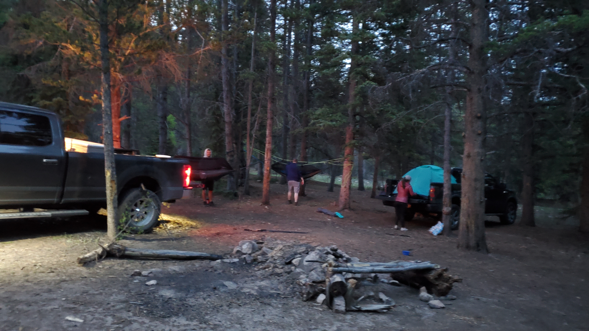
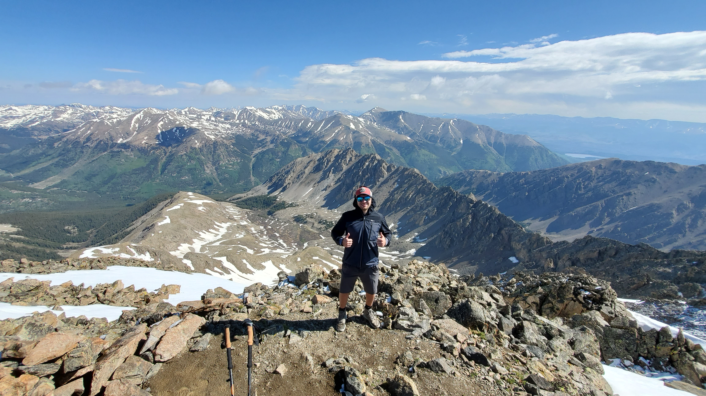
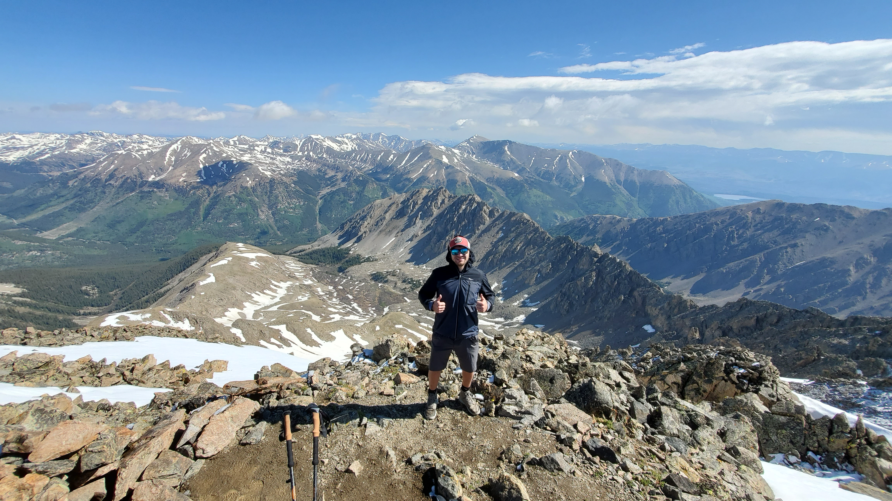

The Night BeforeWe drove in Friday afternoon and setup camp a few hundred yards from the trail head. Our plan was to start the hike around 5:30am, the forecast called for thunderstorms in the early afternoon and we wanted to have camp packed up before the storms came in. |

 |

|
Early MorningWe started the hike shortly after 5:30 am. There was a light mist at the trail head but the clouds appeared to be clearing. |


 
